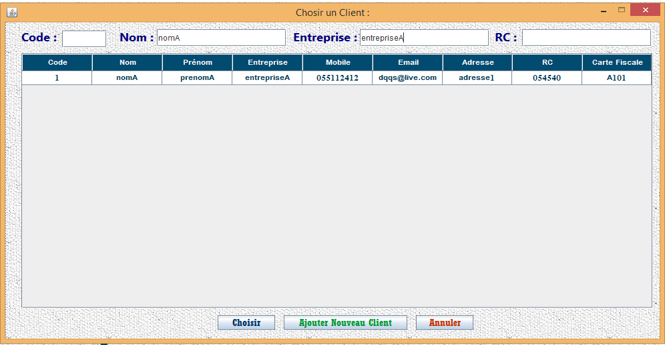
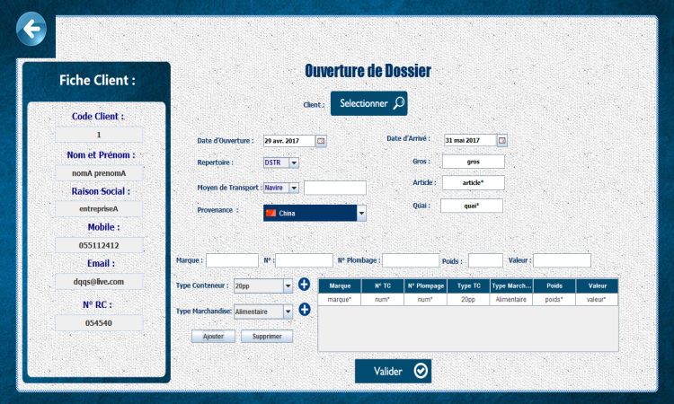
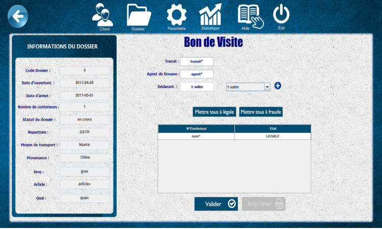
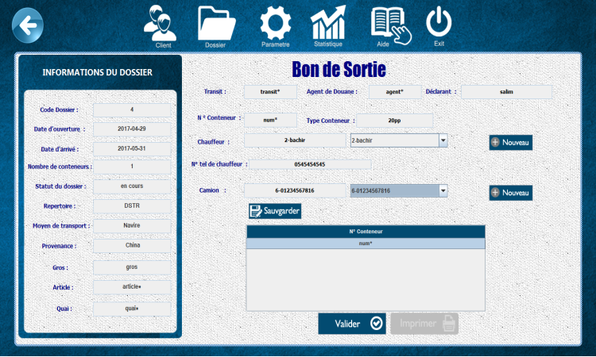

1. Cliquez sur le bouton Nouveau (une nouvelle
fenêtre s’ouvre contenant les champs des paramètres construisant un dossier).
2. D’abord vous devez indiquer le client concerné
par ce dossier. Cliquez sur le bouton Sélectionner.

3. Cherchez le client dans le tableau (utilisez
la barre de la recherche), il n’est pas obligatoire de remplir tous les champs
Senario1 (client trouvé) :
sélectionnez le et cliquez sur le bouton Choisir.
Senario2 (client pas trouvé) : vous devez l’ajouter
d’abord. Cliquez sur le bouton Ajouter Nouveau Client, la fenêtre de la gestion
des clients s’ouvre, ajoutez le client (il sera sélectionné automatiquement).
4.Maintenant que votre client est sélectionné remplissez
le reste des paramètres.

5.Cliquez sur le bouton Ajouter puis Valider.
2. Générer un bon de visite:
1. Sélectionnez le dossier, vous pouvez effectuer une recherche
par nom du client en utilisant la barre de la recherche en haut comme vous pouvez préciser une plage du temps.
2. Cliquez sur le bouton Bon de Visite (une nouvelle fenêtre s’ouvre
contenant les champs des paramètres d’un bon de visite).
3. Remplissez les champs vides puis cliquez sur Valider, OK. Maintenant vous pouvez imprimer votre bon de visite.

3. Générer un bon de sortie:
1. Sélectionnez le dossier, vous pouvez effectuer une recherche
par nom du client en utilisant la barre de la recherche en haut comme vous pouvez préciser une plage du temps.
2. Cliquez sur le bouton Bon de Visite (une nouvelle fenêtre s’ouvre
contenant les champs des paramètres d’un bon de sortie).
3. Remplissez les champs Transit, Agent de Douane et Déclarant.
Sélectionnez le numéro de conteneur dans le tableau dessous. Remplissez le
reste des champs.
4. Cliquez sur le bouton Sauvegarder puis Valider, OK.
Maintenant vous pouvez imprimer votre bon de sortie.

4. Générer une facture:
1. Sélectionnez le dossier, vous pouvez effectuer une recherche
par nom du client en utilisant la barre de la recherche en haut comme vous pouvez préciser une plage du temps.
2. Cliquez sur le bouton Facture (une nouvelle fenêtre s’ouvre contenant
les champs des paramètres d’une facture).
3. Ajoutez les désignations. Vous pouvez laisser le champ
observation vide.
4. Cliquez sur Valider, OK. Maintenant vous pouvez imprimer
votre facture.